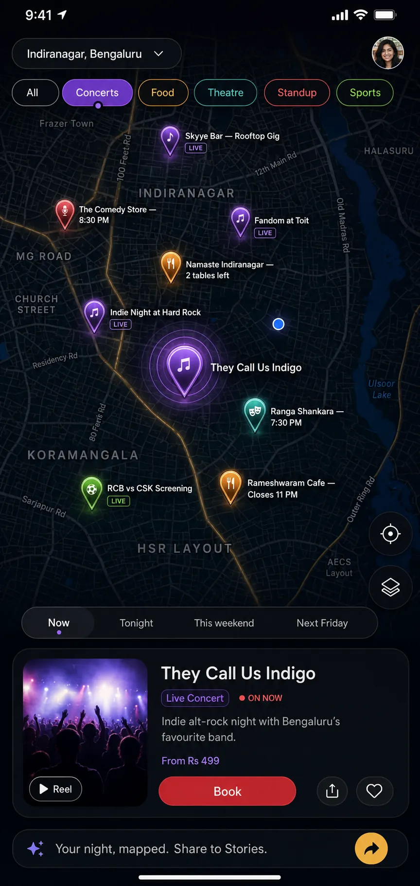
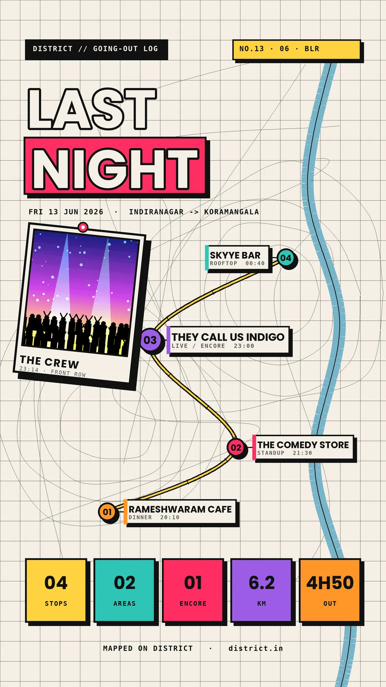

District: The Plot
BookMyShow sells around nine in ten online movie tickets in India. District won't beat that head-on, so it competes by changing what people book in the first place.
Context
District is Eternal's going-out app, same parent as Zomato: movies, events, dining, gigs, sports and nightlife in one place. The wall it runs into is BookMyShow, which sells around nine in ten online movie tickets in India and booked ₹1,869 crore in income last year. Movies are its habit and its engine. District cannot out-book the incumbent on the one thing the incumbent already owns.
So I set a different brief: compete by changing user behaviour, on two fronts. First, widen what people think to do with an evening, plays, live music, concerts, street fairs, the categories that sit in BookMyShow's shadow, and draw attention away from its movie engine. Second, own discovery, the step before the booking. If District is where you decide what to do, it reaches you earlier than BookMyShow and over time takes a bigger share of what gets booked.
Problem
Discovery in District is a list-and-filter chore. A screen holds only so much, and a vertical list spends that space on a handful of items, almost always the popular ones. The long tail stays invisible: the play three streets away, the gig on tonight, the weekend street fair. People book what they are shown, and what they are shown is mostly movies.
A map changes what gets seen. A single theatre pin on the street you are already standing on plants an idea a list never would, that tonight could be a play instead of another film. That is the thing a list cannot do. It puts the option in front of you, in the place you would act on it.
Insight
The discovery engine already exists. It's just in the wrong place. The move is to repurpose Zomato's buried map and its taste data as District's discovery layer. Two things back this. First, people come back to and share experiences with character, not utilities: Snapchat's Snap Map turned a plain map into a daily social habit with its little Actionmoji characters, and Duolingo built retention on personality. A discovery map that feels alive earns opens a flat one never will. Second, cross-app first-party data is a moat no standalone competitor can copy.
Strategy
Position District as the single place to find your whole night out, a live map of what's on, not a directory.
- Use Zomato's first-party data (same parent, Eternal) to curate the food layer by taste and price, so restaurants don't bury the scarcer events.
- Make the map delightful, small, meaningful animations on the pins, so it earns opens and shares. That is exactly what Zomato's utility map does not do.
Frameworks: jobs-to-be-done ("what's on near me tonight"), build-measure-learn (test cheaply before spending), and product-led growth (a share loop built into the feature).
Goal: make the map District's primary discovery surface and a driver of bookings and word-of-mouth, not a vanity feature.
KPIs: map opens and session depth (engagement); map-attributed bookings and cross-category trial (discovery doing its job); shares of "My Night in a Map" (organic acquisition); and return rate (habit).
Execution
The feature is a live local map inside District, called The Plot (the pins you plot, and the night you're plotting): one category lens at a time (food, music, comedy, movies, theatre, sports), a time scrubber (tonight, this weekend, a date), expandable pins (photos, key info, one-tap book) and live status badges (on now, doors at 8, tables left).
The way in is deliberately low-key: a small expandable tab pinned to the bottom-right of the screen, labelled The Plot. Tap it and it opens, asking something inviting like "Plan my night?". A corner tab rather than a new bottom-nav item is also what makes the first test cheap to run.
Solving the density problem, the first thing an interviewer pokes at: food is the only crowded category, so it is curated, not listed. Restaurants are ranked from Zomato's taste-and-price data, with a deliberate "explore" slice so it never becomes an echo chamber. Scarce categories (theatre, standup, gigs) stay open. And detail scales with zoom: city view is a buzz heatmap, neighbourhood view resolves into clustered pins, street view shows individual pins.
The delight layer is the engagement crack: tiny, meaningful animations on the pins, each tied to its venue type and carrying a signal (new, on now, trending), kept light for mid-range phones.
The growth loop is "My Night in a Map": after a night out, your stops auto-stitch into a shareable card (the Spotify Wrapped or Strava move). Every share is a free, credible advert.
And it's built to be tested cheaply: fake-door the map entry point first (does anyone even tap it?), then build V1 in one dense micro-market, then add the share loop, and only then invest in the full game-map aesthetic and badges. Kill the expensive ideas before they cost money.


Impact
It's a concept, so these are targets and the reasoning behind them.
- Make the map a primary discovery surface in the pilot market, judged first on the fake-door tap-through. Rationale: spatial, time-aware browsing beats a list for "what's on tonight," which is why going-out behaviour gravitates to maps.
- Lift bookings per user and cross-category trial. The map surfaces what lists bury (a play two streets away, a gig on tonight), so it should widen what people book, not just deepen it. Rationale: discovery surfaces create incremental demand, and the curate-plus-explore design is built for exactly that.
- Drive organic acquisition through shares. Every "My Night in a Map" posted is a credible, free impression. Rationale: shareable, identity-led artefacts are among the cheapest acquisition channels there are.
The aim is to own discovery for District and build a habit, measured in opens, bookings and shares, not a feature ticked off a roadmap.